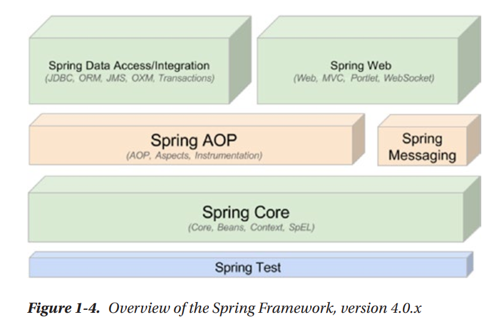

This page contains my personal notes from the Pro Spring Textbook for easy reference.
What is Spring
- Spring (introduced in 2002) has become the main replacement for Java Enterprise Edition (JEE) servers. It
consists of many projects that can be used for building microservices, applications, classical ERPs etc. It
enables you to use a large variety of tools without coupling an application too closely to any particular
tool.
- Spring is a light-weight framework for building Java applications. You can use Spring to build any
application in Java (for example, stand-alone, web, or JEE applications), unlike many other frameworks (such
as Apache Struts, which is limited to web applications). Spring is a light-weight framework in the sense
that if you want out swap out one "project" with another, you can do this by rewriting very less code.
Another term for this is loose-coupling.
- The Spring 4.0.x architecture can be described as follows:

- Some new features introduced in this are:
- Introduction of Spring Web Flow, a project that is an alternative to Spring MVC built on a reactive
foundation, which means taht it is fully asynchronous and non-blocking, intended for use in
event-loop execution model vs. traditionallarge thread pool with a thread-per-request execution
model (built upon Project Reactor)
-
The web and core modules were adapted to the reactive programming model.
Inverting Control or Injecting Dependencies
- The core of the Spring Framework is based on the principle of inversion of control. IoC is a technique
that externalizes the creation and management of component dependencies. Consider an example in which
class Foo depends on an instance of class Bar to perform some kind of processing. Traditionally, Foo
creates an instance of Bar by using the new operator or obtains one from some kind of factory class.
Using the IoC approach, an instance of Bar (or a subclass) is provided to Foo at runtime by some
external process.
- Any Spring-managed resource is referred to as a
bean.
- Spring’s DI implementation is based on two core Java concepts: JavaBeans and interfaces. When you use
Spring as the DI provider, you gain the flexibility of defining dependency configuration within your
applications in different ways (for example, XML files, Java configuration classes, annotations within
your code, or the new Groovy bean definition method). JavaBeans (POJOs) provide a standard mechanism for
creating Java resources that are configurable in a number of ways, such as constructors and setter
methods.
- By using interfaces, you can get the most out of DI because your beans can utilize any interface
implementation (any class or subclass that implements the interface) to satisfy their dependency. The
use of interfaces also allows Spring to utilize JDK dynamic proxies (the Proxy pattern) to provide
powerful concepts such as AOP for crosscutting concerns. (
Link for SO about proxies in Java)
Aspect-Oriented Programming with Spring
- AOP provides the ability to implement crosscutting logic—that is, logic that applies to many parts of
your application—in a single place and to have that logic applied across your application automatically.
- Read more about it on these links:
What is Aspect
Oriented programming
AOP
vs OOP
Validation in Spring
- Spring provides a built-in validation API by way of the Validator interface. In addition
to the target object, the validate method takes an Errors object, which is used to collect
any
validation errors that may occur. Spring also provides a handy utility class,
ValidationUtils, which provides convenience methods for invoking other validators, checking
for common problems such as empty strings, and reporting errors back to the provided Errors object.
Accessing Data in Spring
- Spring’s data access module provides out-of-the-box support for JDBC, Hibernate, JDO, and the JPA.
- However, in the past few years, because of the explosive growth of the Internet and cloud computing,
besides relational databases, a lot of other “special-purpose” databases were developed. Examples
include databases based on key-value pairs to handle extremely large volumes of data (generally referred
to as NoSQL), graph databases, and document databases. To help developers support those databases and to
not complicate the Spring data access module, a separate project called Spring Data was created.
Object/XML in Spring
- Most applications need to integrate or provide services to other applications. One common requirement
is to exchange data with other systems, either on a regular basis or in real time. In terms of data
format, XML is the most commonly used. As a result, you will often need to transform a JavaBean into XML
format, and vice versa.
- Spring supports many common Java-to-XML mapping frameworks and, as usual, eliminates the need
for directly coupling to any specific implementation. Spring provides common interfaces for marshalling
(transforming JavaBeans into XML) and unmarshalling (transforming XML into Java objects) for DI into any
Spring beans. Common libraries such as Java Architecture for XML Binding (JAXB) , Castor, XStream, JiBX,
and XMLBeans are supported. When we discuss remotely accessing a Spring application for business
data in XML format, you will see how to use Spring’s Object/XML Mapping (OXM) support in your
application.
MVC in the Web Tier
- View support in Spring MVC is extensive. In addition to standard support for JSP and Java Standard Tag
Library (JSTL), which is greatly bolstered by the Spring tag libraries, you can take advantage of fully
integrated support for Apache Velocity, FreeMarker, Apache Tiles, Thymeleaf, and XSLT.
- You will find Spring MVC sufficient for your web application development needs. However, Spring can
also integrate with other popular web frameworks such as Struts, JSF, Atmosphere, Google Web Toolkit
(GWT), and so on.
WebSocket Support
- WebSocket defines an API for creating a persistent connection between a client and server, typically
implemented in web browsers and servers. WebSocket-style development opens the door for efficient,
full-duplex communication enabling real-time message exchanges for highly responsive applications.
Remoting Support
- Used for accessing or exposing remote components.
- Spring provides support for a variety of remote access mechanisms, including Java Remote Method
Invocation (RMI), JAX-WS, Caucho Hessian and Burlap, JMS, Advanced Message Queuing Protocol (AMQP), and
REST.
- By applying Spring’s dynamic proxying capabilities, you can have a proxy to a remote resource injected
as a dependency into one of your classes, thus removing the need to couple your application to a
specific remoting implementation and also reducing the amount of code you need to write for your
application.
Also..
- Managing Transactions
- Simplifying and integrating with JEE
- Mail Support
- Job Scheduling Support
- Dynamic Scripting Support
- Simplified Exception Handling